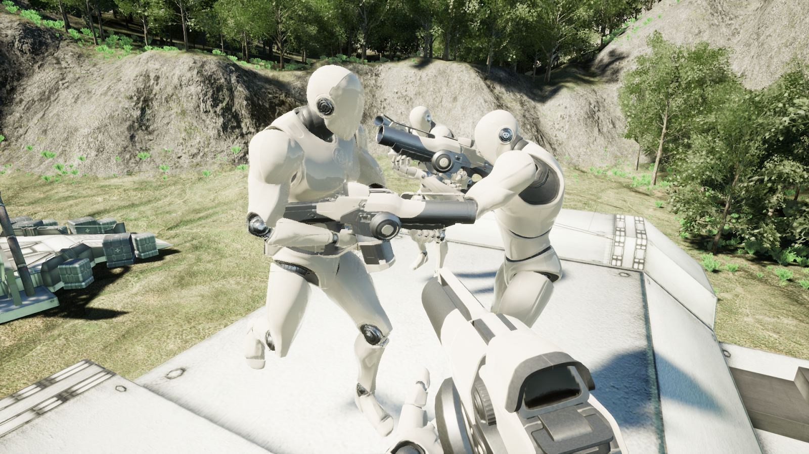
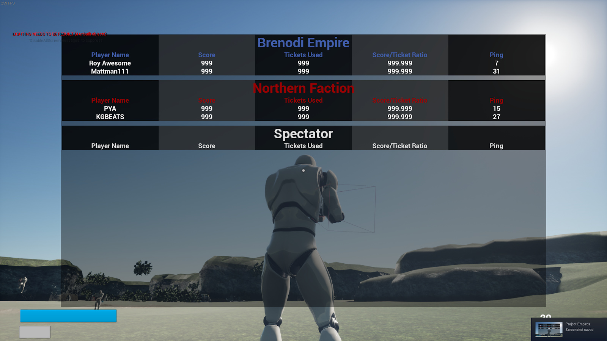
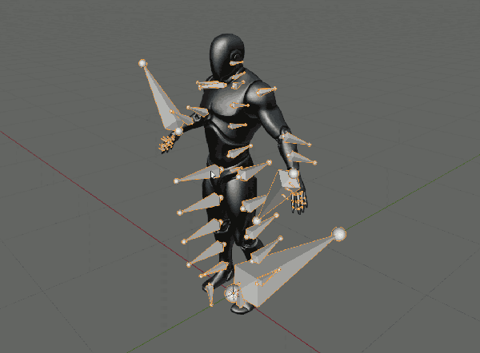
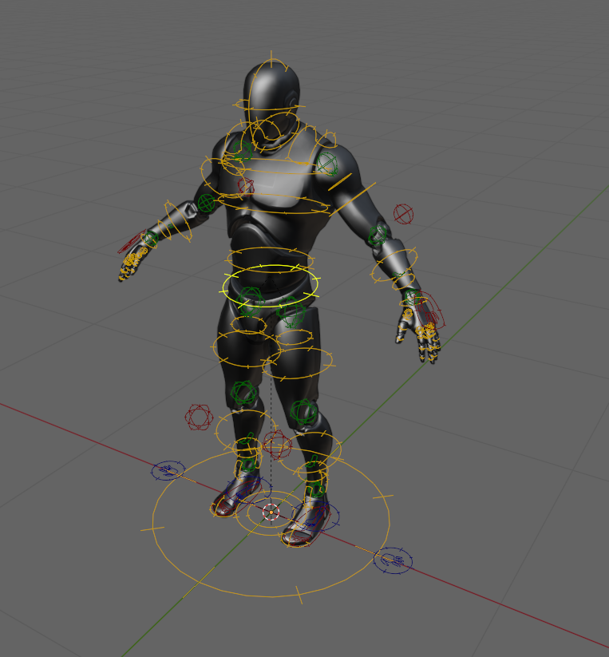
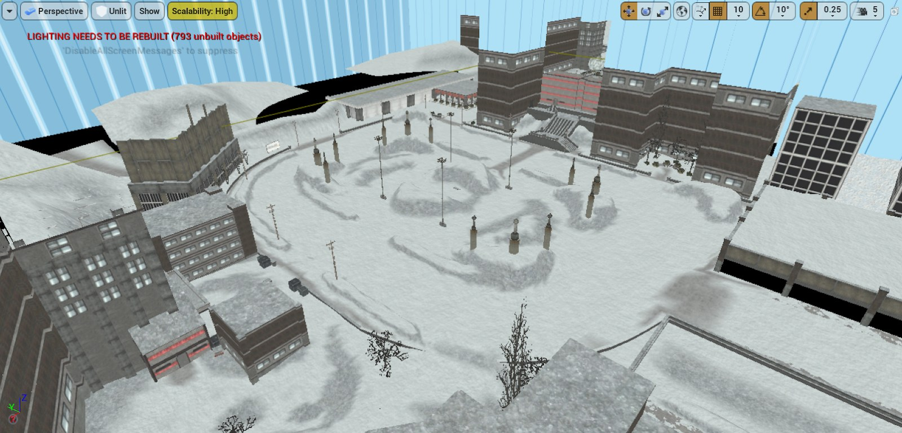
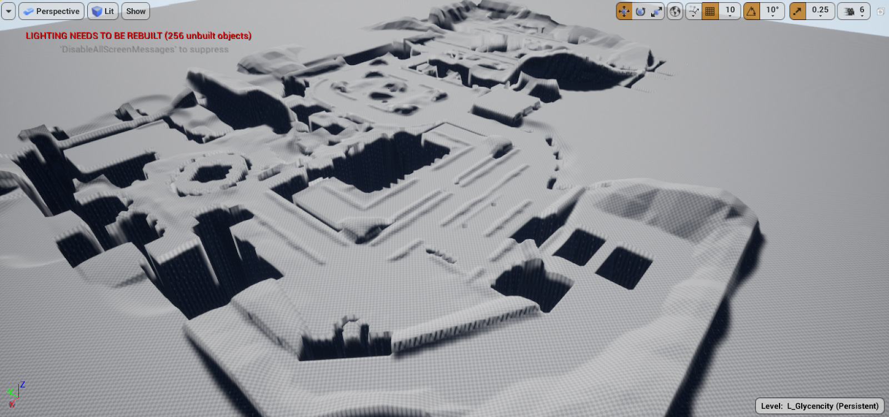
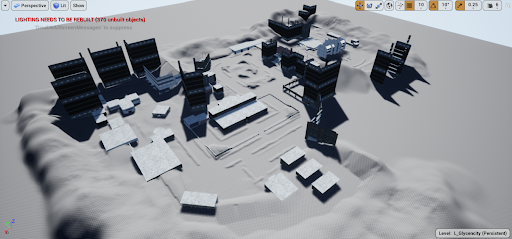
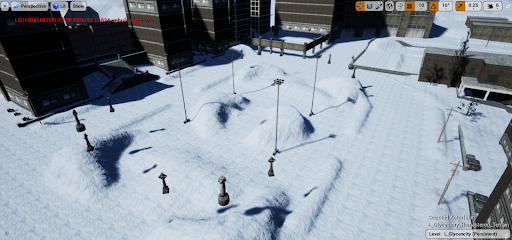
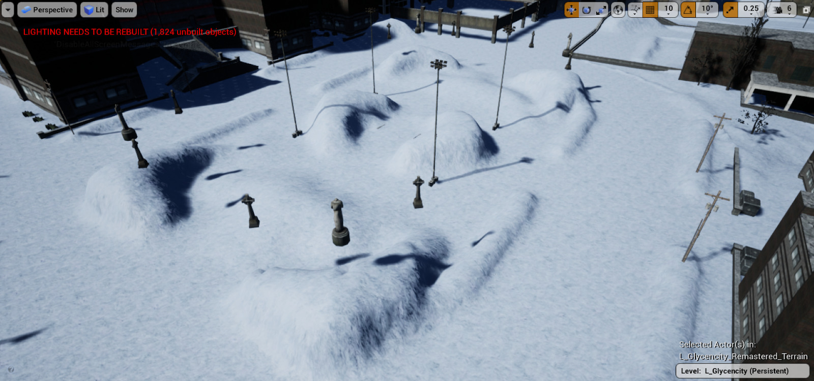
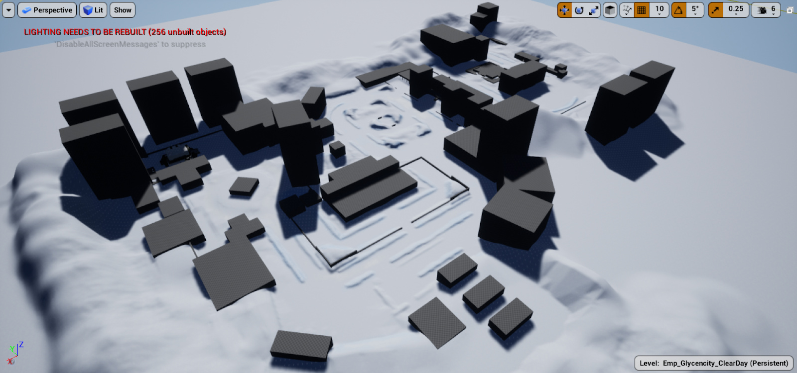

Empires UE4 Monthly Update - July 2020
Project Update - Roy Awesome
Hey Everyone! Another month in the bag for UE4 and we’ve really kicked some butt. We achieved a major milestone this month, we have held multiple playtests! That’s right, we’ve started to be able to play the game and get a general gameplay loop going. We even found a crash while testing!

This is a large milestone because it has a feeling of making this project real. It’s also the furthest along that any Empires remakes has ever gotten, so we are pretty happy about that.
However, we still have a ton of work to do. Getting the game into a state where we could playtest took a bit longer than anticipated, and it encompassed a majority of the work we’ve done this month. We have made some progress toward MVP, but we did not finish it this month as we had hoped.
That being said, we have quite a bit of awesome progress to show off for July.
General
Project style guide - f1r3w4rr10r
We have started to follow this style guide for how to lay out our content in the Unreal project directory. As most style guides it is very opinionated, but helps keep things consistent. It will make it easier to find things and keep stuff organized in general.
I have been mostly busy with that for the past month, when I was even able to work on Empires at all. My other two articles in this update relate to things that happened already before, I just didn’t have time to write about it until now.
Programming
Gameplay Programming - Roy Awesome
For gameplay this month, I did a lot of low level things that don’t really translate to good screenshots to show off. Primarily I was focused on getting the Steam Server Browser working with dedicated servers. This was a really long and arduous process, where no errors would be reported but the server just didn’t show up on steam. I updated the Engine’s steamworks version to 1.49, I cleaned up the session code to post the right tags, and configured the dedicated server to make use of the right steam appid. However, the work was not for naught, as we are now able to run a build on our Jenkins server, it posts automatically to steam, and then we just update our games and play. The process is quick and easy now, and won’t need to be changed for the future. It’s important to have good infrastructure, but it doesn’t lead to interesting updates.
Outside of that, I got a Scoreboard working. I’m experimenting with the design a bit, and would like to hear all of your feedback. I removed “Kills” and “Deaths” and instead am using “Score” and “Tickets Used”. Kills is an interesting metric for Empires, but it doesn’t quite convey all the things that are good to do in Empires. Healing, Building, dealing damage… These are all actions that generate Score, and the highest Scoring player is often the best even if they aren’t getting a lot of kills. Changing death to Tickets Used is just a really obvious change, as if you are revived your death doesn’t really matter.

I also hooked up animations to gameplay abilities, meaning events such as firing, reloading, and the like animate now! I’m using some placeholder animations, so they look pretty bad. I’ve set it all up now so that artists and animators can add in new animations without any code support needed at all, a feature that will surely benefit long term development of this port.
Art
Player Mesh reskinning - f1r3w4rr10r
Hi there, you might remember that, some updates ago, PYA had a go at porting the old player meshes using animation retargeting. (Essentially mapping bones from one skeleton to another, to be able to play the same animations on both of them.) This gave us some mixed results, especially around the twist bones, on the wrists for example.
I now tried a different approach, but just using the UE4 mannequin skeleton and reskinning the player meshes onto that skeleton. This might be a bit more work, but it has the tremendous advantage of giving us a bit more control over how the mesh moves with the skeleton.
The main reason for using the UE4 mannequin is that the Unreal marketplace is chock-full of ready made animation packs for that skeleton. Meaning we get basic, general purpose animations for free. If we need anything more custom, we can still author those animations ourselves.
I had some attempts before to get Blender to work with the rest of the 3D gaming ecosystem, but here again I had to tinker around a bit to find something that worked. If you want to know more about that, read my “3D Software interoperability” article in this update.
But in the end, I managed to get a quite decent looking skin of the BE soldier into the engine. I still have to do the NF soldier. For the first person view, we wanted to go a slightly different approach and we might just go with making entirely new meshes for that.
3D Software interoperability - f1r3w4rr10r
So how did I even get a proper skeleton into Blender? The short answer: I didn’t.
You can export assets out of the Unreal editor. Most kinds of 3D data will be exported as FBX file format. Blender does have an FBX exporter/importer, but since the FBX library is proprietary Autodesk software, the guys who make Blender had to reverse engineer the file format to make this importer/exporter work. Add to that, that the file format is binary and that Autodesk likes to change arbitrary things in it from version to version, just to thwart such reverse engineering attempts.
In any case, Blender does have a working exporter that supports most, but not all things in the file format. Further depending on what you want to interoperate with (in our case the Unreal Engine/Editor), you have to set the import/export settings properly. Further if you import the skeleton from Unreal into Blender, the bones have the wrong orientation.

This is not a bug of the importer or wrong settings, this is actually how the skeleton was authored in Maya and imported into Unreal. The problem is, that Blender actually cares about the base orientation of bones and seemingly Maya and Unreal don’t. Having a proper bone orientation in Blender makes many things a lot easier. Namely setting up constraints and thus a rig, automatically skinning meshes onto the skeleton with envelopes, etc.
I also can’t just rotate those bones in the way I would like, because that would break as soon as I reimport it into Unreal.
After looking around some, I found this handy plugin for Blender: Mr. Mannequins Tools
This saves me a ton of work. Not only because it provides me with a proper skeleton, but also because it comes with a quite good rig out of the box!. (I am not sure quite yet how much of the stuff it does is imported from premade files and how much of it is generated by code.)

This now allows me to test my skinned meshes in Blender, but also an easy way to create new animations and export them into the engine.
Level Design
Glycencity Remaster - thomasfn
I’ve been working on porting/remastering glycencity from sourcepires. I like the idea and aesthetic of a snowed-in city/town. There are also interesting potential gameplay implications to explore later down the line, like dense snowfall that limits visibility, flashlights / headlights illuminating snowfall and giving away positions etc. For now I will be remaining faithful to the original, in the spirit of the unrealpires project.
The first step is to import the sourcepires map in-engine, so that I have a reference to compare against that can easily be toggled on and off in the editor. I did this using my HL2 asset importer plugin, which I started working on a long time before unrealpires existed. I needed to make a few modifications so that the imported assets didn’t depend on the plugin, which would’ve been annoying for other devs who don’t have it installed.

All of the materials and models have come in and at the correct scale. There are a few missing brushes, the normals on the displacements are screwed up, and none of the decals have come through (some of the buildings use decals for the windows), but it’s good enough for a reference. Once the remaster is done, the imported map and assets will be deleted to ensure they don’t accidentally make it into a build.
Most of the map’s terrain consists of displacements, with the buildings being made out of brushes. Terrain in UE4 is best achieved using landscapes, so I set out to convert the displacements to a single large landscape. Here you can see the imported map with only displacement geometry.

There are plenty of holes where buildings are placed, but coverage is generally pretty good, and there are not too many cases of layering (displacements on top of other displacements). I decided to write a script that would go through each point on a landscape, and sample the displacements to figure out the correct height.

The initial version of the script went pretty well. You can see it’s working great for areas covered by displacements, but there are some enormous pits generated where there are holes, as it failed to trace against anything and returned a sample height of 0. So, I amended the script to select the nearest valid height for points where it failed to trace anything.

Much better, although you can still see harsh drops on the outside of the map, so I re-enabled the brush geometry for reference and set out to clean up the edges. This was largely accomplished using the ramp tool to create ramps from the tops of the edges to the flat areas, and smoothing it all over with the smooth tool. I also went around the perimeter of the play area and added some more taller hills, to give the background some more depth. I didn’t spend too much time on this, as I’m not sure yet how many more buildings I want to add to the skyline, and any fine details would likely depend on the material being used.

I’m not too worried about players escaping the play area yet - this is something that can be solved later. Refining the landscape will likely be an ongoing task as I add buildings and more details to the map.
Next I wanted to add a material to the landscape, which is the fastest way of bringing a level to life. The textures used by sourcepires are low resolution and are not PBR, so I looked at freepbr which I’ve used some materials from in the past and grabbed the snow and ice ones. Chances are I’ll probably swap these out later down the line, or maybe we can make some better ones in-house, but they’ll do nicely for now. A bit of importing and material-fu later, and we have a snowy landscape.

Immediately you will notice the tiling. Tiling has been a problem in games ever since textures were first used in 3D graphics, and you’ll struggle to find a game nowadays which doesn’t have a tiling texture somewhere or the other (although to their credit the sourcepires textures are actually pretty good for tiling, at least the ones seen in this map). With modern hardware we have more processing power to play with, so I decided to try and layer up the texture a few times at slightly different scales and rotations, using a larger noise texture to blend between them.

As you can see this looks alot better from a distance. You can still see some repeating patterns here and there but it’s much more broken up and shouldn’t be too noticeable once we have more ground detail. The effect fades to the regular tiling texture when you’re up close, to maintain the crispness of the finer details.
The next step is to block out the buildings and other objects important to gameplay like walls and obstacles for cover. For this I created giant untextured cubes around all of the imported geometry. The goal of blocking out the map is to get to a playable state as soon as possible, even if it’s the ugliest thing you’ve ever seen, so that you can lock down the scale and flow of the map before you spend too much time detailing.

Here you can see the first blockout pass complete. There’s still at least a few buildings I’ve forgotten to hollow out, and there are no doubt issues with scaling and not being able to fit through doors or things feeling too big/small, but at least we now have a non-imported reference point to work on. The next steps for me will be to move towards a playable demo, which will include setting up all of the spawn points, flags etc and adding blocking volumes to prevent the player escaping.
Sound and Music
Hey all! Bit of a quieter month on the music front…constant changes to my work situation with COVID have kept me pretty busy to say the least.
I did manage to crank out one complete tune, something I envision for the beginning of a round where there’s that 1-2 minutes of ambience before you come into contact with the enemy team. Hence, this is why the track is relatively short, just something to fill that time. Take a listen!
As I’ve discussed with Roy, one of the things I think would be interesting to explore for this new remake would be to include multiple different musical styles/genres/flavors, not just strictly orchestral. Thus, I began working on another track this month that, while grounded in orchestral style, explores a bit of the hard-rock side too. This track I envision as playing when coming into contact with the enemy, perhaps for the first time. I see creating other tracks that are more rock/action-centric for this soundtrack, so this is a good starting point to both naturally transition/incorporate both styles, and explore my voice in the genre.
Again, this track is NOT FINISHED, far from it in fact. This is also just a small sample of the first portion of the track. While I seldom demonstrate in-progress projects, I thought it would be nice to share this as it’s something I think could bring a lot of cool flavor to the new soundtrack. I hope to have the full track done by next month.
Website hugo port - Tama “Bob2” McGlinn
As a parting gift to the newly formed Unreal team, I’ve been porting the empiresmod website from the hakyll setup we have been using to Hugo. The main advantage is that hugo has a lot more support - it is really easy to set up on a new machine, so there probably won’t be any trouble getting a Continuous Integration server running, so that Pull Requests can come with a preview and approving the PR on github will be all that is necessary for the team to push changes to the website. The old setup had a CI but it broke, and hakyll being such a complicated setup - we haven’t been able to fix it. So for almost a year now, my machine has been the only one able to build the website and push changes.
The new website should look identical to the current one; however, the team page will obviously need a lot of updating. Hugo will also bring some new features, like being able to filter by tags and authors, but it’s up to the new team whether they will make use of this.